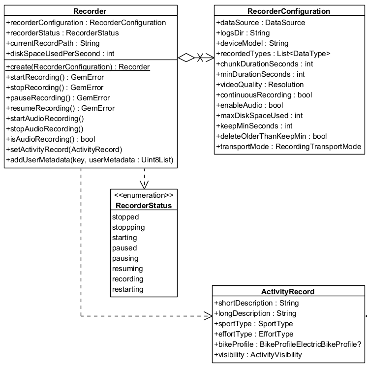
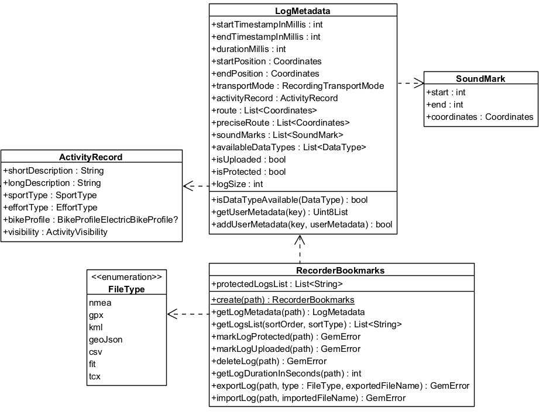

Recorder¶
The Recorder module manages sensor data recording with configurable parameters through RecorderConfiguration:
- Customizable storage options - Define log directories, manage disk space, and specify recording duration
- Data type selection - Specify which data types (video, audio, or sensor data) to record
- Video and audio options - Set video resolution, enable/disable audio recording, and manage chunk durations. Record sensor data only, sensor data + video, sensor data + audio, or all three
Control the recording lifecycle:
- Start, stop, pause, and resume recordings
- Automatic restarts for continuous recording with chunked durations
The Recorder supports various transportation modes (car, pedestrian, bike), enabling detailed analysis and classification based on context. Set disk space limits to prevent overwhelming device storage—logs are automatically managed based on retention thresholds.
The main classes used by the Recorder:

Initialize the Recorder¶
Use the create method to obtain a configured Recorder instance:
RecorderConfiguration recorderConfiguration = RecorderConfiguration(
dataSource: dataSource,
logsDir: tracksPath,
recordedTypes: [DataType.position],
);
Recorder recorder = Recorder.create(recorderConfiguration);📝 Note: If the
dataSource,logsDir, andrecordedTypesparameters are not populated with valid data, thestartRecordingmethod returnsGemError.invalidInputand no data is recorded.
Configure the RecorderConfiguration¶
| Recorder configuration attribute | Description |
|---|---|
| dataSource | The source providing the data to be recorded. |
| logsDir | The directory used to keep the logs |
| deviceModel | The device model. Deprecated, use hardwareSpecifications instead. |
| hardwareSpecifications | Extensive details about the device as a hashmap. |
| recordedTypes | The data types that are recorded |
| minDurationSeconds | The minimum duration for the recording to be saved |
| videoQuality | The video quality |
| chunkDurationSeconds | The chunk duration time in seconds |
| continuousRecording | Whether the recording should continue automatically when chunk time achieved |
| enableAudio | This flag will be used to determine if audio is needed to be recorded or not |
| maxDiskSpaceUsed | When reached, it will stop the recording |
| keepMinSeconds | Will not delete any record if this threshold is not reached |
| deleteOlderThanKeepMin | Older logs that exceeds minimum kept seconds threshold should be deleted |
| transportMode | The transport mode |
⚠️ Attention: If the log duration is shorter than
minDurationSeconds, thestopRecordingmethod does not save the recording and returnsGemError.recordedLogTooShort.The
GemError.recordedLogTooShorterror may also occur if an insufficient number of positions were emitted, even when the duration betweenstartRecordingandstopRecordingexceedsminDurationSeconds. To test recording functionality, create a custom externalDataSourceand push custom positions. Refer to the custom positioning guide for details. The externalDataSourcemust be provided to theRecorderConfigurationobject.The
GemError.generalresult might be returned if the application has been sent to background without the required configuration. See the record while app is in background section below.If
minChunkDurationis set too high, it may cause GemError.noDiskSpacesince the SDK determines how much space is required for the entire chunk.Ensure that the
DataTypevalues passed to therecordedTypesparameter are supported by the target platform. For example, specifyingDataType.nmeaChunkon iOS causes the startRecording method to returnGemError.invalidInput. See more details about sensor types here.💡 Tip: Use the path_provider package to obtain a valid path to save recordings. The following snippet shows how to obtain a valid folder path in a platform-independent way:
Future<String> getTracksPath() async { // Requires the path_provider package final rootDir = await path_provider.getApplicationDocumentsDirectory(); final tracksPath = path.joinAll([rootDir.path, "Data", "Tracks"]); return tracksPath; }
The videoQuality parameter is based on the Resolution enum. Each value represents a standard video resolution that affects recording quality and storage requirements.
Camera Resolutions¶
| Resolution Enum Value | Description | Dimensions (pixels) |
|---|---|---|
Resolution.unknown |
No resolution set. | — |
Resolution.sd480p |
Standard Definition | 640 × 480 |
Resolution.hd720p |
High Definition | 1280 × 720 |
Resolution.fullHD1080p |
Full HD | 1920 × 1080 |
Resolution.wqhd1440p |
Wide Quad HD | 2560 × 1440 |
Resolution.uhd4K2160p |
Ultra HD (4K) | 3840 × 2160 |
Resolution.uhd8K4320p |
Ultra HD (8K) | 7680 × 4320 |
💡 Tip: The actual disk usage depends on platform and encoding settings. Here are rough size estimates used internally by the SDK for calculating space requirements:
Resolution Approx. Bytes/sec Approx. MB/min sd480p 210,000 ~12 MB/min hd720p (iOS) 1,048,576 ~60 MB/min hd720p (Android) 629,760 ~37 MB/min fullHD1080p 3,774,874 ~130 MB/min Note: 1 MB = 1,048,576 bytes (binary MB). These are estimates and may vary slightly by platform and encoding settings.
Note: These values are used to pre-check disk availability when
chunkDurationSecondsis set.
Recording lifecycle¶
-
Start the Recorder - Call the
startRecordingmethod to initiate recording. The recorder transitions to the recording state -
Pause and resume - Use
pauseRecordingandresumeRecordingto manage interruptions -
Chunked recordings - If a chunk duration is set in the configuration, the recording automatically stops when the duration is reached. A new recording begins seamlessly if continuous recording is enabled, ensuring uninterrupted data capture
-
Stop the Recorder - The
stopRecordingmethod halts recording, and the system ensures logs meet the configured minimum duration before saving them as.gmfiles insidelogsDir
Use the Recorder¶
The following sections present use cases for the recorder:
String tracksPath = await _getTracksPath();
DataSource? dataSource = DataSource.createLiveDataSource();
if (dataSource == null){
showSnackbar("The datasource could not be created");
return;
}
RecorderConfiguration recorderConfiguration = RecorderConfiguration(
dataSource: dataSource,
logsDir: tracksPath,
recordedTypes: [DataType.position],
);
// Create recorder based on configuration
final recorder = Recorder.create(recorderConfiguration);
GemError errorStart = await recorder.startRecording();
if (errorStart != GemError.success) {
showSnackbar("Error starting recording: $errorStart");
}
// Other code
GemError errorStop = await recorder.stopRecording();
if (errorStop != GemError.success) {
showSnackbar("Error stopping recording: $errorStop");
}⚠️ Attention: The
Recorderonly saves data explicitly defined in therecordedTypeslist. Any other data is ignored.⚠️ Attention: The
startRecordingandstopRecordingmethods must be awaited to ensure proper execution. Otherwise, unexpected behavior may occur.💡 Tip: Request permission for location usage before starting a recorder.
Recorder Permissions¶
Android
To use the recorder with camera, microphone, and optionally location or external media access, you need to declare the appropriate permissions in your AndroidManifest.xml.
By default, recordings can be saved in your app's internal storage. This requires only camera, audio, and location permissions.
However, if you want to save recordings to the device's gallery, Downloads folder, or any public/external storage, you’ll also need additional media permissions.
<!-- Required for camera recording -->
<uses-permission android:name="android.permission.CAMERA" />
<!-- Required for audio recording -->
<uses-permission android:name="android.permission.RECORD_AUDIO" />
<!-- Required if your recording setup uses location data -->
<uses-permission android:name="android.permission.ACCESS_FINE_LOCATION" />
<uses-permission android:name="android.permission.ACCESS_COARSE_LOCATION" />
<!-- Required if saving to public folders or accessing gallery content -->
<uses-permission android:name="android.permission.READ_MEDIA_IMAGES" /> <!-- Android 13+ -->
<uses-permission android:name="android.permission.READ_EXTERNAL_STORAGE" /><manifest> block of your android/app/src/main/AndroidManifest.xml.
Runtime permission requests are also required on Android 6.0+ (API 23+). Use a library like `permission_handler` to manage them.More info: Android Manifest permissions
iOS
On iOS, you need to declare your app’s intent to use the camera, microphone, and optionally, the user’s location, in the ios/Runner/Info.plist file.
Add the following entries inside the <dict> block:
<!-- Required for camera recording -->
<key>NSCameraUsageDescription</key>
<string>This app requires camera access to record video.</string>
<!-- Required for audio recording -->
<key>NSMicrophoneUsageDescription</key>
<string>This app requires microphone access to record audio.</string>
<!-- Required if using location data during recording -->
<key>NSLocationWhenInUseUsageDescription</key>
<string>Location is needed for recording location-tagged videos.</string>More info: Apple App Privacy & Permissions
Record Metrics¶
The RecordMetrics object provides performance metrics for a recorded activity.
Available only when the recorder is in RecorderStatus.recording status.
Access these metrics:
distanceMeters- Total distance traveled in meterselevationGainMeters- Total elevation gain in metersavgSpeedMps- Average speed in meters per second
Use these values to analyze ride or workout performance, monitor progress, and build custom dashboards or statistics.
GemError errorStart = await recorder.startRecording();
if (errorStart != GemError.success) {
showSnackbar("Error starting recording: $errorStart");
}
// Get the recorder metrics at any time while recording
final metrics = recorder.metrics;
print("Average speed: ${metrics.avgSpeedMps}");
print("Distance in meters: ${metrics.distanceMeters}");
print("Elevation gain: ${metrics.elevationGainMeters}");💡 Tip: The metrics reset at the start of each recording. Once the recording stops, the collected data is available in LogMetadata
Record audio¶
Enable audio recording by setting the enableAudio parameter in the RecorderConfiguration to true. Call the startAudioRecording method from the Recorder class to start, and use stopAudioRecording to stop:
RecorderConfiguration recorderConfiguration = RecorderConfiguration(
dataSource: dataSource,
logsDir: tracksPath,
recordedTypes: [DataType.position],
enableAudio: true
);
// Create recorder based on configuration
Recorder recorder = Recorder.create(recorderConfiguration);
GemError errorStart = await recorder.startRecording();
if (errorStart != GemError.success) {
showSnackbar("Error starting recording: $errorStart");
}
// At any moment enable audio recording
recorder.startAudioRecording();
// Other code
// At any moment stop audio recording
recorder.stopAudioRecording();
GemError errorStop = await recorder.stopRecording();
if (errorStop != GemError.success) {
showSnackbar("Error stopping recording: $errorStop");
}💡 Tip: Audio recording results in a log file of type
.mp4. This file also contains the binary data of a.gmfile and is accessible by system players.⚠️ Attention: Request permission for microphone usage when setting the
enableAudioparameter totrue.
Record video¶
Enable video recording by adding DataType.camera to the recordedTypes and setting the videoQuality parameter in the RecorderConfiguration to your desired resolution (we recommend Resolution.hd720p). Video recording starts when calling startRecording and stops at stopRecording:
RecorderConfiguration recorderConfiguration = RecorderConfiguration(
dataSource: dataSource,
logsDir: tracksPath,
videoQuality: Resolution.hd720p,
recordedTypes: [DataType.position, DataType.camera],
);
// Create recorder based on configuration
Recorder recorder = Recorder.create(recorderConfiguration);
GemError errorStart = await recorder.startRecording();
if (errorStart != GemError.success) {
showSnackbar("Error starting recording: $errorStart");
}
// Other code
GemError errorStop = await recorder.stopRecording();
if (errorStop != GemError.success) {
showSnackbar("Error stopping recording: $errorStop");
}💡 Tip: Camera recording results in a log file of type
.mp4. This file also contains the binary data of a.gmfile and is accessible by system players.⚠️ Attention: Request permission for camera usage when adding the
DataType.cameraparameter torecordedTypes.⚠️ Attention: When
chunkDurationis set, the SDK checks available disk space before starting the recording.If there isn't enough space to store an entire chunk (based on the selected resolution), the recorder does not start and returns
GemError.noDiskSpace.Estimate required storage ahead of time. See Camera Resolutions for expected sizes.
Record Multimedia¶
Record a combination of audio, video, and sensors by setting up the RecorderConfiguration with all desired functionalities:
RecorderConfiguration recorderConfiguration = RecorderConfiguration(
dataSource: dataSource,
logsDir: tracksPath,
videoQuality: Resolution.hd720p,
recordedTypes: [DataType.position, DataType.camera],
enableAudio: true
);
// Create recorder based on configuration
Recorder recorder = Recorder.create(recorderConfiguration);
GemError errorStart = await recorder.startRecording();
if (errorStart != GemError.success) {
showSnackbar("Error starting recording: $errorStart");
}
// At any moment enable audio recording
recorder.startAudioRecording();
// Other code
// At any moment stop audio recording
recorder.stopAudioRecording();
GemError errorStop = await recorder.stopRecording();
if (errorStop != GemError.success) {
showSnackbar("Error stopping recording: $errorStop");
}💡 Tip: Audio recording results in a log file of type
.mp4. This file also contains the binary data of a.gmfile and is accessible by system players.⚠️ Attention: Request permission for camera and microphone usage when setting the
enableAudioparameter totrueand adding theDataType.cameraparameter torecordedTypes.
Background Location Recording¶
Enable location recording while the app is in background by enabling the allowsBackgroundLocationUpdates flag on the PositionSensorConfiguration of the data source. Update the Android and iOS platform-specific configuration files.
Dart Example¶
final logsDir = await _getLogsDir();
// Create the live data source
final dataSource = DataSource.createLiveDataSource()!;
// Enable background location updates
final config = dataSource.getConfiguration(DataType.position);
config.allowsBackgroundLocationUpdates = true;
dataSource.setConfiguration(type: DataType.position, config: config);
// Create the recorder with config
final recorder = Recorder.create(
RecorderConfiguration(
dataSource: dataSource,
logsDir: logsDir,
recordedTypes: [DataType.position],
),
);
// Start recording
final errorStart = await recorder.startRecording();
if (errorStart != GemError.success) {
showSnackbar("Error starting recording: $errorStart");
}Android
Android manifest¶
Add the following permissions to android/app/src/main/AndroidManifest.xml:
<!-- Foreground location -->
<uses-permission android:name="android.permission.ACCESS_FINE_LOCATION" />
<uses-permission android:name="android.permission.ACCESS_COARSE_LOCATION" />
<!-- Background location (required for Android 10+) -->
<uses-permission android:name="android.permission.ACCESS_BACKGROUND_LOCATION" />💡 Tip: To record while the app is in background, ensure the device/battery settings allow background activity.
Runtime permission¶
On Android 6.0+ (API 23+), background location requires runtime permissions. Use permission_handler:
await Permission.locationAlways.request();Info.plist¶
Add the following entries to your ios/Runner/Info.plist inside the <dict> block:
<key>NSLocationWhenInUseUsageDescription</key>
<string>Location is needed for map localization and navigation.</string>
<key>NSLocationAlwaysAndWhenInUseUsageDescription</key>
<string>Location access is required in background to continue recording.</string>
<key>UIBackgroundModes</key>
<array>
<string>location</string>
</array>⚠️ Attention: If the
allowsBackgroundLocationUpdatesflag is not enabled and the app is backgrounded during recording, callingstopRecordingmay result in GemError.general.
Recorder bookmarks and metadata¶
The SDK uses the proprietary .gm file format for recordings, offering advantages over standard file types:
- Supports multiple data types, including acceleration, rotation, and more
- Allows embedding custom user data in binary format
- Enables automatic storage management by the SDK to optimize space usage
Recordings are saved as .gm or .mp4 files by the Recorder. The RecorderBookmarks class manages recordings, including exporting .gm or .mp4 files to other formats such as .gpx, importing external formats, and converting them to .gm for seamless SDK integration.
The LogMetadata class provides an object-oriented representation of a .gm or .mp4 file, offering features such as retrieving start and end timestamps, coordinates, and path details at varying levels of precision.
Use the RecorderBookmarks class for enhanced log management:
- Export and import logs - Convert logs to/from different formats such as GPX, NMEA, and KML
- Log metadata - Retrieve details like start and end timestamps, transport mode, and size
The main classes used by the RecorderBookmarks:

Export logs¶
// Create recorderBookmarks
// It loads all .gm and .mp4 files at logsDir
RecorderBookmarks? bookmarks = RecorderBookmarks.create(tracksPath);
if(bookmarks == null) return;
// Get list of logs
List<String> logList = bookmarks.getLogsList();
// Export last recording as a GPX file with a given name
// Assumes the logList is not empty
GemError exportLogError = bookmarks.exportLog(
logList.last,
FileType.gpx,
exportedFileName: "My_File_Name",
);
if (exportLogError != GemError.success) {
showSnackbar("Error exporting log: $exportLogError");
}My_File_Name.gpx. If the name of the exported file is not specified, the log name is used.
⚠️ Attention: Exporting a
.gmfile to other formats may result in data loss, depending on the data types supported by each format.💡 Tip: The exported file is saved in the same directory as the original log file.
Import logs¶
Import logs by loading a standard file format (such as gpx, nmea, or kml) into a .gm file for further processing:
GemError importError = bookmarks.importLog("path/to/file", importedFileName: "My_File_Name");
if (importError != GemError.success) {
showSnackbar("Error importing log: $importError");
}Access metadata¶
Access metadata for each log through the LogMetadata class:
RecorderBookmarks? bookmarks = RecorderBookmarks.create(logsDir);
if(bookmarks != null) {
LogMetadata? logMetadata = bookmarks.getLogMetadata(logList.last);
}⚠️ Attention: The
getLogMetadatamethod returnsnullif the log file does not exist inside thelogsDirdirectory or if the log file is not a valid.gmfile.
The metadata within a LogMetadata object contains:
- startPosition / endPosition - Geographic coordinates for the log's beginning and end
- getUserMetadata / addUserMetadata - Store and retrieve additional data using a key-value approach
- preciseRoute - Comprehensive list of all recorded coordinates, capturing the highest level of detail possible
- route - List of route coordinates spaced at least 20 meters apart, with a three-second recording delay between each coordinate
- transportMode -
RecordingTransportModeof recording - startTimestampInMillis / endTimestampInMillis - Timestamp of the first/last sensor data
- durationMillis - Log duration
- isProtected - Check if a log file is protected. Protected logs are not automatically deleted after
keepMinSecondsspecified inRecorderConfiguration - logSize - Log size in bytes
- isDataTypeAvailable - Verify if a data type is produced by the log file
- soundMarks - List of recorded soundmarks
- activityRecord - Recorded activity details
- logMetrics - Basic metrics about the recorded log
To visualize the recorded route, construct a Path object using the route coordinates from the LogMetadata. Display this path on a map. For more details, refer to the documentation on the path entity and display paths.
Custom user metadata¶
Add custom metadata to a log during recording or after completion using the addUserMetadata method, available in both the Recorder and LogMetadata classes. The method requires a String key and the associated data as a Uint8List.
Retrieve previously added metadata using the getUserMetadata method of the LogMetadata class:
LogMetadata? logMetadata = recorderBookmarks!.getLogMetadata(logPath);
// Save image encoded in Uint8List
Uint8List imageSample = ...;
logMetadata?.addUserMetadata("ImgData", imageSample);
// Save text by encoding to Uint8List
String text = 'Hello world!';
final encodedText = utf8.encode(text);
// Get image
Uint8List? imageData = logMetadata?.getUserMetadata("ImgData");
// Get text
Uint8List? encodedTextGot = logMetadata?.getUserMetadata("textData");
String? textData = encodedTextGot != null ? utf8.decode(encodedTextGot) : null;Record While App Is in Background¶
Recording might fail with error code GemError.general when calling stopRecording if the app is sent to background during recording. Set positionActivity to true on the PositionActivity associated with the data source before instantiating the Recorder:
DataSource dataSource = DataSource.createLiveDataSource()!;
PositionSensorConfiguration sensorConfiguration = dataSource.getConfiguration(DataType.position);
sensorConfiguration.allowsBackgroundLocationUpdates = true;
dataSource.setConfiguration(type: DataType.position, config: sensorConfiguration);
RecorderConfiguration recorderConfiguration = RecorderConfiguration(
recordedTypes: [DataType.position],
logsDir: logsDir,
hardwareSpecifications: {},
minDurationSeconds: 5,
dataSource: dataSource,
);
Recorder _recorder = Recorder.create(
recorderConfiguration
);iOS configuration¶
Add the NSLocationAlwaysUsageDescription and UIBackgroundModes keys to the Info.plist file, within the <dict> block:
<key>NSLocationAlwaysAndWhenInUseUsageDescription</key>
<string>Location is needed for map localization and navigation.</string><key>UIBackgroundModes</key>
<array>
<string>fetch</string>
<string>location</string>
</array>Android configuration¶
Add the ACCESS_BACKGROUND_LOCATION permission to the app's manifest file.
ActivityRecord¶
The ActivityRecord class captures details about a recorded activity, including descriptions, sport type, effort level, and visibility settings.
Attributes¶
| Attribute | Description |
|---|---|
| shortDescription | A brief summary of the activity. |
| longDescription | A detailed explanation of the activity. |
| sportType | The type of sport involved in the activity. |
| effortType | The intensity of effort (e.g., easy, moderate, hard). |
| bikeProfile | Bike profile details (if applicable). |
| visibility | Defines who can view the activity. |
LogMetrics¶
The LogMetrics object provides essential statistics about a recorded log. These metrics are useful for analyzing movement, elevation, and speed data.
| Attribute | Description |
|---|---|
| distanceMeters | Total distance covered during the log, measured in meters. |
| elevationGainMeters | Total elevation gained over the course of the log, measured in meters. |
| avgSpeedMps | Average speed throughout the log, measured in meters per second. |
Setting the activity record¶
GemError errorStart = await recorder.startRecording();
if (errorStart != GemError.success) {
showSnackbar("Error starting recording: $errorStart");
}
// Other code
recorder.activityRecord = ActivityRecord(
shortDescription: "Morning Run",
longDescription: "A 5km run through the park.",
sportType: SportType.run,
effortType: EffortType.moderate,
visibility: ActivityVisibility.everyone,
);
// Other code
GemError errorStop = await recorder.stopRecording();
if (errorStop != GemError.success) {
showSnackbar("Error stopping recording: $errorStop");
}⚠️ Attention: Call this method while recording. Calling it after stopping does not affect existing recordings.
Get the activity record¶
final bookmarks = RecorderBookmarks.create(tracksPath);
if (bookmarks == null){
showSnackbar("Bookmarks could not be created");
return;
}
final logList = bookmarks.getLogsList();
LogMetadata? metadata = bookmarks.getLogMetadata(logList.last);
if (metadata == null) {
showSnackbar("Log metadata could not be retrieved");
return;
}
ActivityRecord activityRecord = metadata.activityRecord;